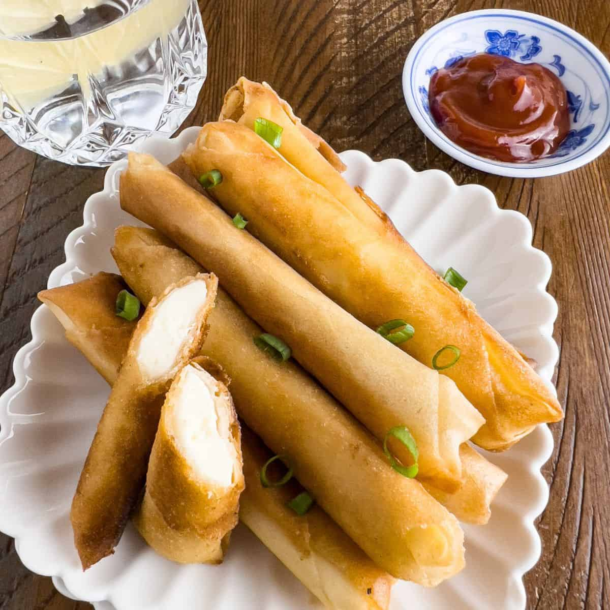
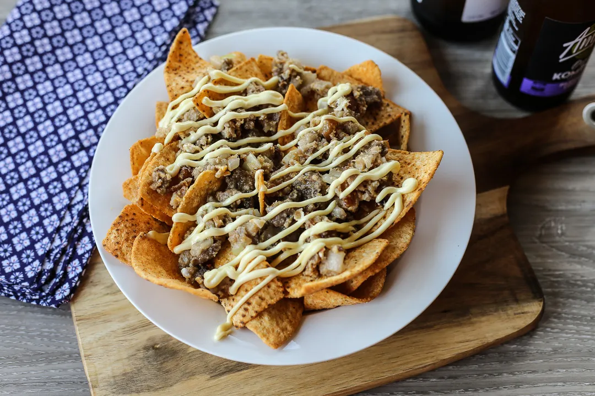
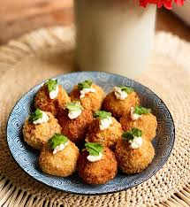
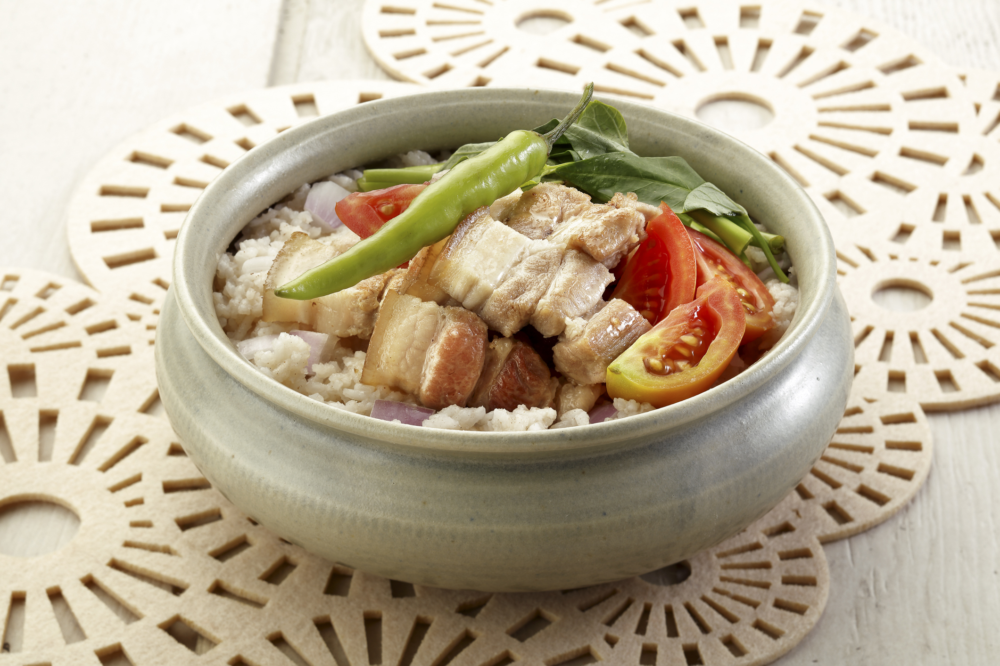
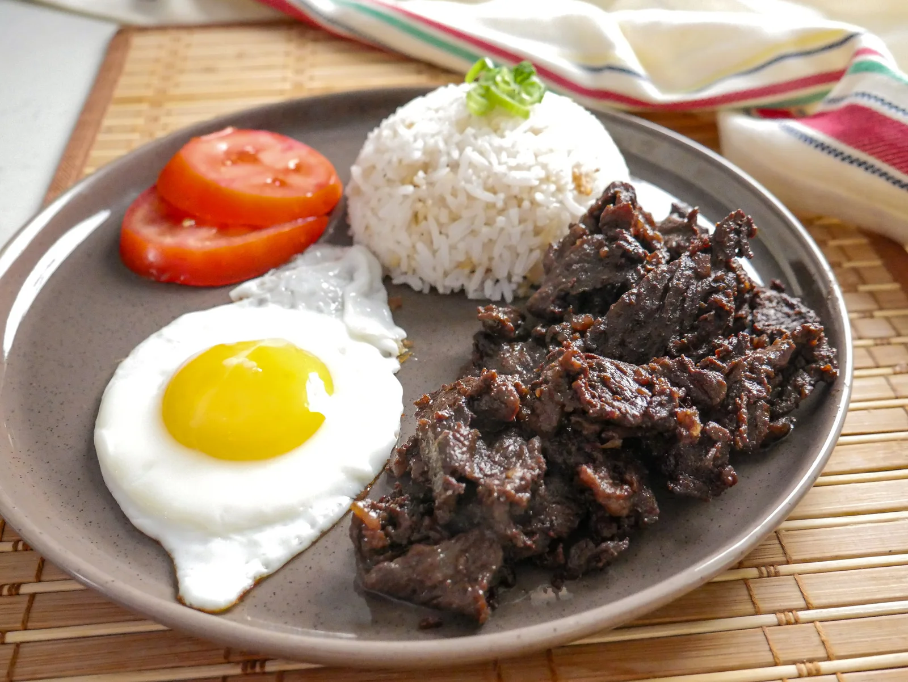

Appetizers

Cheese Lumpia Rolls ₱150
Crispy wonton wrapper filled with creamy kesong puti and herbs.

Silid Nachos ₱180
Homemade kamote chips topped with pork adobo bits and garlic aioli.

Tinapa Croquettes ₱170
Smoked fish and potato croquettes.
Mains

Adobo Blanc ₱280
Slow-cooked chicken in garlic white cream sauce served with rice.

Sinigang Rice Bowl ₱290
Pork belly with tamarind glaze.

Café Sílid Tapa ₱260
Tender beef tapa with egg, garlic rice, and pickled papaya.